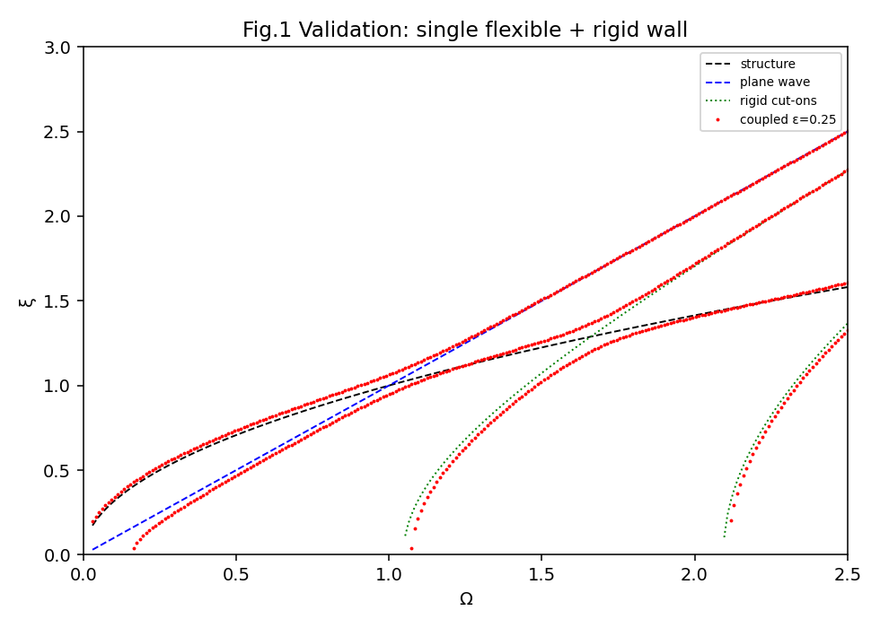
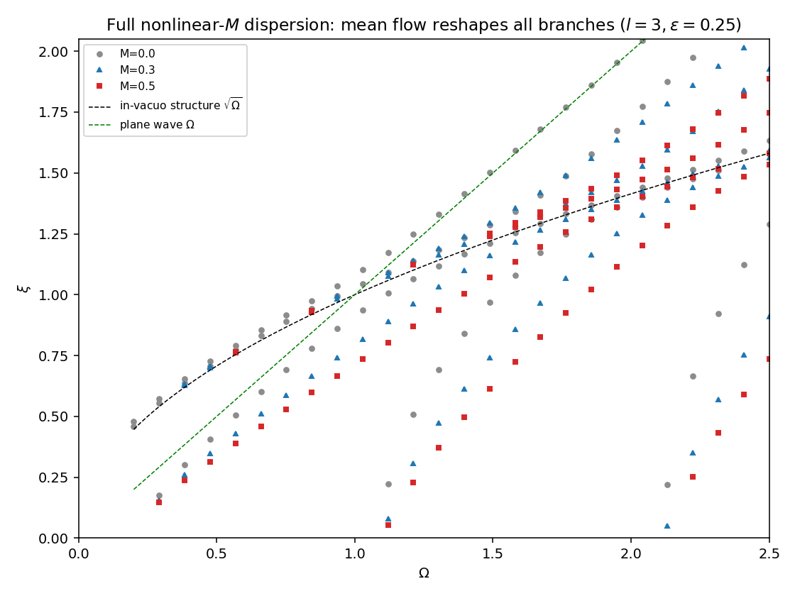
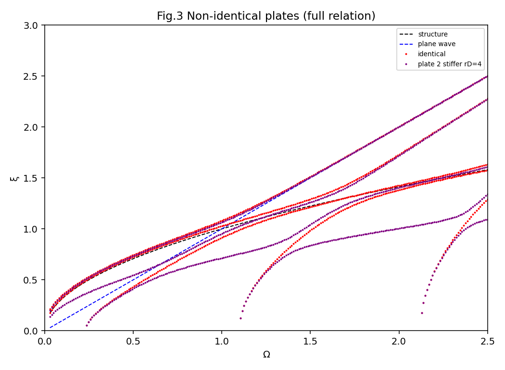
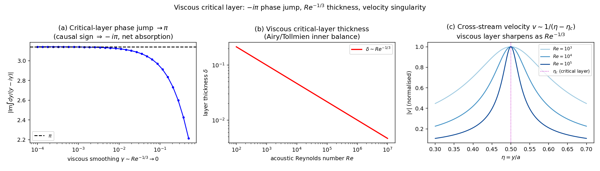

Background
The single flexible plate waveguide, a fluid column with one compliant wall, is a classical problem with a known asymptotic catalogue of coupled wavenumbers. I extended that analysis to a fluid column bounded by two flexible plates, in general non identical, deriving the coupled dispersion relation, its symmetric and antisymmetric decoupling, and the exact reduction back to the single plate case.

The new physics
The genuinely new content comes from adding a sheared, low Mach Poiseuille mean flow through the Pridmore Brown equation with a plate admittance boundary condition. From that I derived a closed form first order correction in Mach number, the critical layer threshold for this system, and the result that the discrete wall modes are not absorbed by the critical layer.
- A closed-form O(M) correction for every coupled branch, from a Fredholm solvability condition.
- A critical-layer threshold that marks where the mean shear starts to matter.
- Wall modes that survive the critical layer through Stokes-dominated decay rather than being absorbed.
- A convective-stability result: the flow shifts the branches but does not destabilise them.



Honest framing
The quiescent two plate catalogue is, on its own, largely a clean re derivation of results already in the literature, so I do not claim it as the novelty. The contribution is the combination, flexible plate asymptotics with a Poiseuille profile, and the specific closed form low Mach corrections and wall mode results. It is an incremental but real addition, framed honestly.